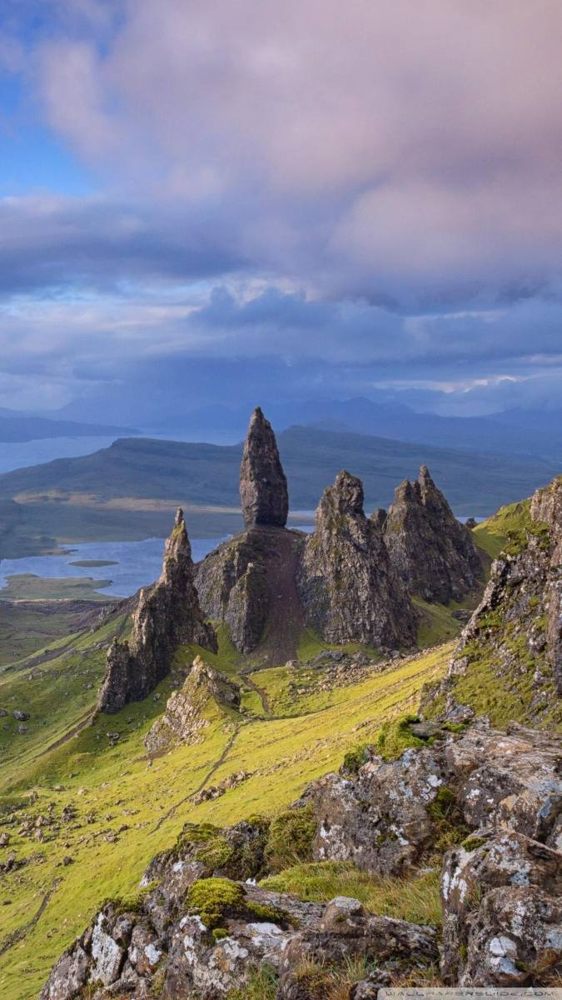
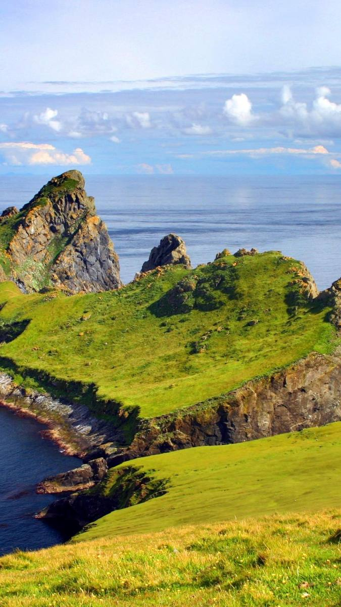

SCOZIA
2026
ON THE ROAD
SCOZIA
on the road
🚗
MANCANO
{{ cdDays }}
GIORNI
{{ cdH }}:{{ cdM }}:{{ cdS }}
PROSSIMA FERMATA
{{ next.name }}
{{ next.zona }}
{{ next.badge }}
▲SCOZIA · 3–11 OTTOBRE
Itinerario
{{ sheetHint }}
{{ d.dateShort }}
{{ d.kicker }}
{{ d.title }}
{{ d.subtitle }}
{{ d.chev }}
{{ m.t }}
Apri il giorno›
— Alba gu bràth · Scozia per sempre —
←
{{ dv.dateShort }}
{{ dv.kicker }}
{{ dv.title }}
{{ dv.subtitle }}
{{ m.t }}
SCEGLI L’ITINERARIO
{{ dv.routeA.label }}
{{ dv.routeA.sub }}
{{ dv.routeB.label }}
{{ dv.routeB.sub }}
DOVE ANDIAMO
{{ dv.go }}
attrazione
✦ chicca
percorso
COSA VEDIAMO
{{ r.num }}
{{ r.name }}✦ CHICCA
{{ r.note }}
›
DA SAPERE
• {{ n }}
▲ AUDIOGUIDA ▲
Ogni tappa, una storia
Tocca un luogo per ascoltarlo
{{ d.label }}
{{ s.name }}
{{ s.zona }}
▶ {{ s.dur }} di ascolto
›
— ▲ —
←
{{ ag.name }}
◉{{ ag.zona }}
DIFFICOLTÀ
{{ ag.diff }}
DURATA
{{ ag.durTxt }}
PERCORSO
{{ ag.dist }}
Panoramica
{{ p }}
Consiglio utile
{{ ag.tip }}
— ▲ —
{{ playIcon }}
{{ gTitle }}
{{ playElapsed }}{{ gDur }}
▲ LO SAPEVI CHE… ▲
Curiosità
Piccole storie scozzesi da tirar fuori al momento giusto
{{ c.tag }}
{{ c.title }}
{{ c.body }}
— ▲ —
←
{{ det.dayLabel }}
✦ CHICCA
{{ det.name }}
{{ det.dayTitle }}
{{ det.desc }}
{{ det.ctaKicker }}
{{ det.ctaTitle }}
→
{{ t.label }}